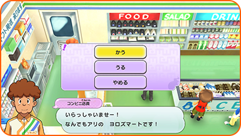
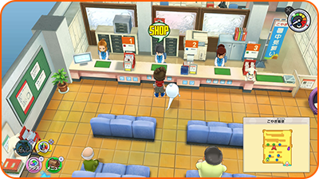
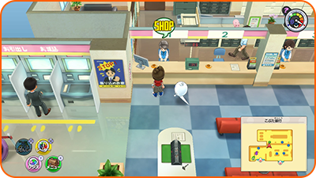
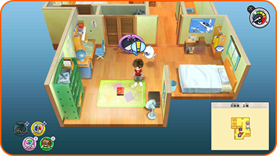
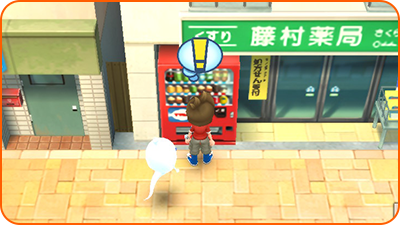
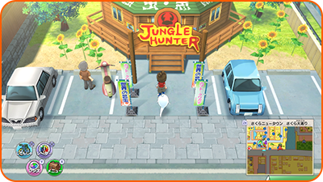

Usar servicios
Superhíper
Habla con el empleado para comprar o vender comida u objetos. Selecciona lo que quieras comprar o vender y el número de unidades.

Oficina de correos Borreguero
¡Ve a los mostradores para participar en combates multijugador y conseguir objetos especiales!

| Mostrador número 1 | Participa en combates multijugador. |
|---|---|
| Mostrador número 2 | Recibe objetos descargándolos a cambio de contraseñas. |
| Mostrador número 3 | Obtén recompensas por actualizar el juego de vez en cuando. |
Banco Cerdibank
Aquí puedes utilizar el Joy-Con™ derecho u otro dispositivo compatible para escanear los datos del chip NFC integrado en objetos como Arks Yo-kai o Espadas Sagradas e intercambiarlos por monedas de Expendekai. Algunos juguetes solo pueden escanear una vez, mientras que otros pueden escanear una vez al día.
※ Tras el escaneo del objeto, el progreso se guarda automáticamente.

Tu casa
Lleva al personaje principal a la cama para que duerma y para restaurar los PV y el animámetro de tus amigos Yo-kai. Tras dormir, avanzarás hasta la siguiente mañana o tarde en el juego. También puedes utilizar el Medálium de Yo-kai en el centro de la habitación para cambiar los Yo-kai de tu rueda Yo-kai.

Tiendas y máquinas expendedoras
Aquí puedes comprar comida y objetos.
Todas las tiendas tienen diferentes horarios de apertura. Asimismo, cuando estés comprando algo en una máquina expendedora, puede aparecer una bebida misteriosa llamada Energicina...
※ En la mayoría de tiendas normales no puedes vender objetos.

Caza y Sedal
Aquí puedes vender o intercambiar por objetos los insectos y los peces que hayas capturado.
